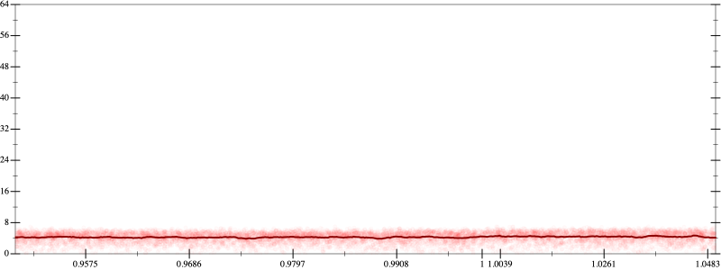
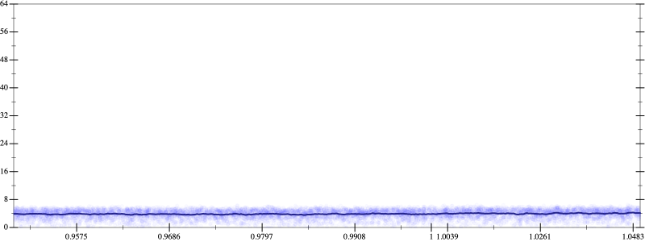
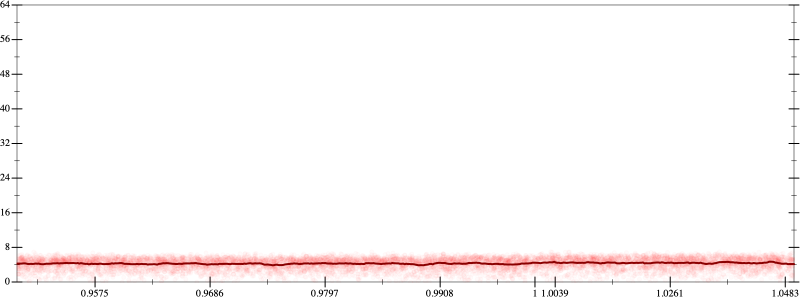
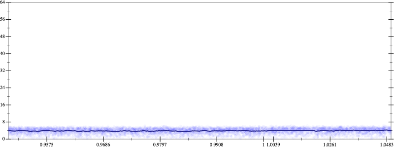

Initial program 4.3
\[\left(\left(\left(\left(\left(\left(\left(\left(1.0 + -10.0 \cdot x\right) + 22.5 \cdot \left(x \cdot x\right)\right) + -20.0 \cdot \left(\left(x \cdot x\right) \cdot x\right)\right) + 8.75 \cdot \left(\left(\left(x \cdot x\right) \cdot x\right) \cdot x\right)\right) + -2.1 \cdot \left(\left(\left(\left(x \cdot x\right) \cdot x\right) \cdot x\right) \cdot x\right)\right) + 0.291667 \cdot \left(\left(\left(\left(\left(x \cdot x\right) \cdot x\right) \cdot x\right) \cdot x\right) \cdot x\right)\right) + -0.02381 \cdot \left(\left(\left(\left(\left(\left(x \cdot x\right) \cdot x\right) \cdot x\right) \cdot x\right) \cdot x\right) \cdot x\right)\right) + 0.001116 \cdot \left(\left(\left(\left(\left(\left(\left(x \cdot x\right) \cdot x\right) \cdot x\right) \cdot x\right) \cdot x\right) \cdot x\right) \cdot x\right)\right) + -2.8 \cdot 10^{-05} \cdot \left(\left(\left(\left(\left(\left(\left(\left(x \cdot x\right) \cdot x\right) \cdot x\right) \cdot x\right) \cdot x\right) \cdot x\right) \cdot x\right) \cdot x\right)\]
- Using strategy
rm Applied add-cube-cbrt4.3
\[\leadsto \left(\left(\left(\left(\color{blue}{\left(\sqrt[3]{\left(\left(\left(1.0 + -10.0 \cdot x\right) + 22.5 \cdot \left(x \cdot x\right)\right) + -20.0 \cdot \left(\left(x \cdot x\right) \cdot x\right)\right) + 8.75 \cdot \left(\left(\left(x \cdot x\right) \cdot x\right) \cdot x\right)} \cdot \sqrt[3]{\left(\left(\left(1.0 + -10.0 \cdot x\right) + 22.5 \cdot \left(x \cdot x\right)\right) + -20.0 \cdot \left(\left(x \cdot x\right) \cdot x\right)\right) + 8.75 \cdot \left(\left(\left(x \cdot x\right) \cdot x\right) \cdot x\right)}\right) \cdot \sqrt[3]{\left(\left(\left(1.0 + -10.0 \cdot x\right) + 22.5 \cdot \left(x \cdot x\right)\right) + -20.0 \cdot \left(\left(x \cdot x\right) \cdot x\right)\right) + 8.75 \cdot \left(\left(\left(x \cdot x\right) \cdot x\right) \cdot x\right)}} + -2.1 \cdot \left(\left(\left(\left(x \cdot x\right) \cdot x\right) \cdot x\right) \cdot x\right)\right) + 0.291667 \cdot \left(\left(\left(\left(\left(x \cdot x\right) \cdot x\right) \cdot x\right) \cdot x\right) \cdot x\right)\right) + -0.02381 \cdot \left(\left(\left(\left(\left(\left(x \cdot x\right) \cdot x\right) \cdot x\right) \cdot x\right) \cdot x\right) \cdot x\right)\right) + 0.001116 \cdot \left(\left(\left(\left(\left(\left(\left(x \cdot x\right) \cdot x\right) \cdot x\right) \cdot x\right) \cdot x\right) \cdot x\right) \cdot x\right)\right) + -2.8 \cdot 10^{-05} \cdot \left(\left(\left(\left(\left(\left(\left(\left(x \cdot x\right) \cdot x\right) \cdot x\right) \cdot x\right) \cdot x\right) \cdot x\right) \cdot x\right) \cdot x\right)\]
Applied simplify4.0
\[\leadsto \left(\left(\left(\left(\color{blue}{\left(\sqrt[3]{{x}^{3} \cdot \left(8.75 \cdot x + -20.0\right) + \left(x \cdot \left(x \cdot 22.5\right) + \left(x \cdot -10.0 + 1.0\right)\right)} \cdot \sqrt[3]{{x}^{3} \cdot \left(8.75 \cdot x + -20.0\right) + \left(x \cdot \left(x \cdot 22.5\right) + \left(x \cdot -10.0 + 1.0\right)\right)}\right)} \cdot \sqrt[3]{\left(\left(\left(1.0 + -10.0 \cdot x\right) + 22.5 \cdot \left(x \cdot x\right)\right) + -20.0 \cdot \left(\left(x \cdot x\right) \cdot x\right)\right) + 8.75 \cdot \left(\left(\left(x \cdot x\right) \cdot x\right) \cdot x\right)} + -2.1 \cdot \left(\left(\left(\left(x \cdot x\right) \cdot x\right) \cdot x\right) \cdot x\right)\right) + 0.291667 \cdot \left(\left(\left(\left(\left(x \cdot x\right) \cdot x\right) \cdot x\right) \cdot x\right) \cdot x\right)\right) + -0.02381 \cdot \left(\left(\left(\left(\left(\left(x \cdot x\right) \cdot x\right) \cdot x\right) \cdot x\right) \cdot x\right) \cdot x\right)\right) + 0.001116 \cdot \left(\left(\left(\left(\left(\left(\left(x \cdot x\right) \cdot x\right) \cdot x\right) \cdot x\right) \cdot x\right) \cdot x\right) \cdot x\right)\right) + -2.8 \cdot 10^{-05} \cdot \left(\left(\left(\left(\left(\left(\left(\left(x \cdot x\right) \cdot x\right) \cdot x\right) \cdot x\right) \cdot x\right) \cdot x\right) \cdot x\right) \cdot x\right)\]
Applied simplify4.3
\[\leadsto \left(\left(\left(\left(\left(\sqrt[3]{{x}^{3} \cdot \left(8.75 \cdot x + -20.0\right) + \left(x \cdot \left(x \cdot 22.5\right) + \left(x \cdot -10.0 + 1.0\right)\right)} \cdot \sqrt[3]{{x}^{3} \cdot \left(8.75 \cdot x + -20.0\right) + \left(x \cdot \left(x \cdot 22.5\right) + \left(x \cdot -10.0 + 1.0\right)\right)}\right) \cdot \color{blue}{\sqrt[3]{\left(\left(x \cdot 22.5\right) \cdot x + \left(x \cdot -10.0 + 1.0\right)\right) + {x}^{3} \cdot \left(-20.0 + 8.75 \cdot x\right)}} + -2.1 \cdot \left(\left(\left(\left(x \cdot x\right) \cdot x\right) \cdot x\right) \cdot x\right)\right) + 0.291667 \cdot \left(\left(\left(\left(\left(x \cdot x\right) \cdot x\right) \cdot x\right) \cdot x\right) \cdot x\right)\right) + -0.02381 \cdot \left(\left(\left(\left(\left(\left(x \cdot x\right) \cdot x\right) \cdot x\right) \cdot x\right) \cdot x\right) \cdot x\right)\right) + 0.001116 \cdot \left(\left(\left(\left(\left(\left(\left(x \cdot x\right) \cdot x\right) \cdot x\right) \cdot x\right) \cdot x\right) \cdot x\right) \cdot x\right)\right) + -2.8 \cdot 10^{-05} \cdot \left(\left(\left(\left(\left(\left(\left(\left(x \cdot x\right) \cdot x\right) \cdot x\right) \cdot x\right) \cdot x\right) \cdot x\right) \cdot x\right) \cdot x\right)\]
- Using strategy
rm Applied distribute-lft-in4.3
\[\leadsto \left(\left(\left(\left(\left(\sqrt[3]{{x}^{3} \cdot \left(8.75 \cdot x + -20.0\right) + \left(x \cdot \left(x \cdot 22.5\right) + \left(x \cdot -10.0 + 1.0\right)\right)} \cdot \sqrt[3]{{x}^{3} \cdot \left(8.75 \cdot x + -20.0\right) + \left(x \cdot \left(x \cdot 22.5\right) + \left(x \cdot -10.0 + 1.0\right)\right)}\right) \cdot \sqrt[3]{\left(\left(x \cdot 22.5\right) \cdot x + \left(x \cdot -10.0 + 1.0\right)\right) + \color{blue}{\left({x}^{3} \cdot -20.0 + {x}^{3} \cdot \left(8.75 \cdot x\right)\right)}} + -2.1 \cdot \left(\left(\left(\left(x \cdot x\right) \cdot x\right) \cdot x\right) \cdot x\right)\right) + 0.291667 \cdot \left(\left(\left(\left(\left(x \cdot x\right) \cdot x\right) \cdot x\right) \cdot x\right) \cdot x\right)\right) + -0.02381 \cdot \left(\left(\left(\left(\left(\left(x \cdot x\right) \cdot x\right) \cdot x\right) \cdot x\right) \cdot x\right) \cdot x\right)\right) + 0.001116 \cdot \left(\left(\left(\left(\left(\left(\left(x \cdot x\right) \cdot x\right) \cdot x\right) \cdot x\right) \cdot x\right) \cdot x\right) \cdot x\right)\right) + -2.8 \cdot 10^{-05} \cdot \left(\left(\left(\left(\left(\left(\left(\left(x \cdot x\right) \cdot x\right) \cdot x\right) \cdot x\right) \cdot x\right) \cdot x\right) \cdot x\right) \cdot x\right)\]
Applied associate-+r+4.3
\[\leadsto \left(\left(\left(\left(\left(\sqrt[3]{{x}^{3} \cdot \left(8.75 \cdot x + -20.0\right) + \left(x \cdot \left(x \cdot 22.5\right) + \left(x \cdot -10.0 + 1.0\right)\right)} \cdot \sqrt[3]{{x}^{3} \cdot \left(8.75 \cdot x + -20.0\right) + \left(x \cdot \left(x \cdot 22.5\right) + \left(x \cdot -10.0 + 1.0\right)\right)}\right) \cdot \sqrt[3]{\color{blue}{\left(\left(\left(x \cdot 22.5\right) \cdot x + \left(x \cdot -10.0 + 1.0\right)\right) + {x}^{3} \cdot -20.0\right) + {x}^{3} \cdot \left(8.75 \cdot x\right)}} + -2.1 \cdot \left(\left(\left(\left(x \cdot x\right) \cdot x\right) \cdot x\right) \cdot x\right)\right) + 0.291667 \cdot \left(\left(\left(\left(\left(x \cdot x\right) \cdot x\right) \cdot x\right) \cdot x\right) \cdot x\right)\right) + -0.02381 \cdot \left(\left(\left(\left(\left(\left(x \cdot x\right) \cdot x\right) \cdot x\right) \cdot x\right) \cdot x\right) \cdot x\right)\right) + 0.001116 \cdot \left(\left(\left(\left(\left(\left(\left(x \cdot x\right) \cdot x\right) \cdot x\right) \cdot x\right) \cdot x\right) \cdot x\right) \cdot x\right)\right) + -2.8 \cdot 10^{-05} \cdot \left(\left(\left(\left(\left(\left(\left(\left(x \cdot x\right) \cdot x\right) \cdot x\right) \cdot x\right) \cdot x\right) \cdot x\right) \cdot x\right) \cdot x\right)\]
Applied simplify4.1
\[\leadsto \left(\left(\left(\left(\left(\sqrt[3]{{x}^{3} \cdot \left(8.75 \cdot x + -20.0\right) + \left(x \cdot \left(x \cdot 22.5\right) + \left(x \cdot -10.0 + 1.0\right)\right)} \cdot \sqrt[3]{{x}^{3} \cdot \left(8.75 \cdot x + -20.0\right) + \left(x \cdot \left(x \cdot 22.5\right) + \left(x \cdot -10.0 + 1.0\right)\right)}\right) \cdot \sqrt[3]{\color{blue}{\left(\left(x \cdot x\right) \cdot \left(x \cdot -20.0 + 22.5\right) + \left(1.0 + x \cdot -10.0\right)\right)} + {x}^{3} \cdot \left(8.75 \cdot x\right)} + -2.1 \cdot \left(\left(\left(\left(x \cdot x\right) \cdot x\right) \cdot x\right) \cdot x\right)\right) + 0.291667 \cdot \left(\left(\left(\left(\left(x \cdot x\right) \cdot x\right) \cdot x\right) \cdot x\right) \cdot x\right)\right) + -0.02381 \cdot \left(\left(\left(\left(\left(\left(x \cdot x\right) \cdot x\right) \cdot x\right) \cdot x\right) \cdot x\right) \cdot x\right)\right) + 0.001116 \cdot \left(\left(\left(\left(\left(\left(\left(x \cdot x\right) \cdot x\right) \cdot x\right) \cdot x\right) \cdot x\right) \cdot x\right) \cdot x\right)\right) + -2.8 \cdot 10^{-05} \cdot \left(\left(\left(\left(\left(\left(\left(\left(x \cdot x\right) \cdot x\right) \cdot x\right) \cdot x\right) \cdot x\right) \cdot x\right) \cdot x\right) \cdot x\right)\]
- Using strategy
rm Applied add-log-exp4.1
\[\leadsto \left(\left(\left(\left(\left(\sqrt[3]{{x}^{3} \cdot \left(8.75 \cdot x + -20.0\right) + \left(x \cdot \left(x \cdot 22.5\right) + \left(x \cdot -10.0 + 1.0\right)\right)} \cdot \sqrt[3]{{x}^{3} \cdot \left(8.75 \cdot x + -20.0\right) + \left(x \cdot \left(x \cdot 22.5\right) + \color{blue}{\log \left(e^{x \cdot -10.0 + 1.0}\right)}\right)}\right) \cdot \sqrt[3]{\left(\left(x \cdot x\right) \cdot \left(x \cdot -20.0 + 22.5\right) + \left(1.0 + x \cdot -10.0\right)\right) + {x}^{3} \cdot \left(8.75 \cdot x\right)} + -2.1 \cdot \left(\left(\left(\left(x \cdot x\right) \cdot x\right) \cdot x\right) \cdot x\right)\right) + 0.291667 \cdot \left(\left(\left(\left(\left(x \cdot x\right) \cdot x\right) \cdot x\right) \cdot x\right) \cdot x\right)\right) + -0.02381 \cdot \left(\left(\left(\left(\left(\left(x \cdot x\right) \cdot x\right) \cdot x\right) \cdot x\right) \cdot x\right) \cdot x\right)\right) + 0.001116 \cdot \left(\left(\left(\left(\left(\left(\left(x \cdot x\right) \cdot x\right) \cdot x\right) \cdot x\right) \cdot x\right) \cdot x\right) \cdot x\right)\right) + -2.8 \cdot 10^{-05} \cdot \left(\left(\left(\left(\left(\left(\left(\left(x \cdot x\right) \cdot x\right) \cdot x\right) \cdot x\right) \cdot x\right) \cdot x\right) \cdot x\right) \cdot x\right)\]
Applied add-log-exp4.1
\[\leadsto \left(\left(\left(\left(\left(\sqrt[3]{{x}^{3} \cdot \left(8.75 \cdot x + -20.0\right) + \left(x \cdot \left(x \cdot 22.5\right) + \left(x \cdot -10.0 + 1.0\right)\right)} \cdot \sqrt[3]{{x}^{3} \cdot \left(8.75 \cdot x + -20.0\right) + \left(\color{blue}{\log \left(e^{x \cdot \left(x \cdot 22.5\right)}\right)} + \log \left(e^{x \cdot -10.0 + 1.0}\right)\right)}\right) \cdot \sqrt[3]{\left(\left(x \cdot x\right) \cdot \left(x \cdot -20.0 + 22.5\right) + \left(1.0 + x \cdot -10.0\right)\right) + {x}^{3} \cdot \left(8.75 \cdot x\right)} + -2.1 \cdot \left(\left(\left(\left(x \cdot x\right) \cdot x\right) \cdot x\right) \cdot x\right)\right) + 0.291667 \cdot \left(\left(\left(\left(\left(x \cdot x\right) \cdot x\right) \cdot x\right) \cdot x\right) \cdot x\right)\right) + -0.02381 \cdot \left(\left(\left(\left(\left(\left(x \cdot x\right) \cdot x\right) \cdot x\right) \cdot x\right) \cdot x\right) \cdot x\right)\right) + 0.001116 \cdot \left(\left(\left(\left(\left(\left(\left(x \cdot x\right) \cdot x\right) \cdot x\right) \cdot x\right) \cdot x\right) \cdot x\right) \cdot x\right)\right) + -2.8 \cdot 10^{-05} \cdot \left(\left(\left(\left(\left(\left(\left(\left(x \cdot x\right) \cdot x\right) \cdot x\right) \cdot x\right) \cdot x\right) \cdot x\right) \cdot x\right) \cdot x\right)\]
Applied sum-log4.1
\[\leadsto \left(\left(\left(\left(\left(\sqrt[3]{{x}^{3} \cdot \left(8.75 \cdot x + -20.0\right) + \left(x \cdot \left(x \cdot 22.5\right) + \left(x \cdot -10.0 + 1.0\right)\right)} \cdot \sqrt[3]{{x}^{3} \cdot \left(8.75 \cdot x + -20.0\right) + \color{blue}{\log \left(e^{x \cdot \left(x \cdot 22.5\right)} \cdot e^{x \cdot -10.0 + 1.0}\right)}}\right) \cdot \sqrt[3]{\left(\left(x \cdot x\right) \cdot \left(x \cdot -20.0 + 22.5\right) + \left(1.0 + x \cdot -10.0\right)\right) + {x}^{3} \cdot \left(8.75 \cdot x\right)} + -2.1 \cdot \left(\left(\left(\left(x \cdot x\right) \cdot x\right) \cdot x\right) \cdot x\right)\right) + 0.291667 \cdot \left(\left(\left(\left(\left(x \cdot x\right) \cdot x\right) \cdot x\right) \cdot x\right) \cdot x\right)\right) + -0.02381 \cdot \left(\left(\left(\left(\left(\left(x \cdot x\right) \cdot x\right) \cdot x\right) \cdot x\right) \cdot x\right) \cdot x\right)\right) + 0.001116 \cdot \left(\left(\left(\left(\left(\left(\left(x \cdot x\right) \cdot x\right) \cdot x\right) \cdot x\right) \cdot x\right) \cdot x\right) \cdot x\right)\right) + -2.8 \cdot 10^{-05} \cdot \left(\left(\left(\left(\left(\left(\left(\left(x \cdot x\right) \cdot x\right) \cdot x\right) \cdot x\right) \cdot x\right) \cdot x\right) \cdot x\right) \cdot x\right)\]
Applied add-log-exp4.1
\[\leadsto \left(\left(\left(\left(\left(\sqrt[3]{{x}^{3} \cdot \left(8.75 \cdot x + -20.0\right) + \left(x \cdot \left(x \cdot 22.5\right) + \left(x \cdot -10.0 + 1.0\right)\right)} \cdot \sqrt[3]{\color{blue}{\log \left(e^{{x}^{3} \cdot \left(8.75 \cdot x + -20.0\right)}\right)} + \log \left(e^{x \cdot \left(x \cdot 22.5\right)} \cdot e^{x \cdot -10.0 + 1.0}\right)}\right) \cdot \sqrt[3]{\left(\left(x \cdot x\right) \cdot \left(x \cdot -20.0 + 22.5\right) + \left(1.0 + x \cdot -10.0\right)\right) + {x}^{3} \cdot \left(8.75 \cdot x\right)} + -2.1 \cdot \left(\left(\left(\left(x \cdot x\right) \cdot x\right) \cdot x\right) \cdot x\right)\right) + 0.291667 \cdot \left(\left(\left(\left(\left(x \cdot x\right) \cdot x\right) \cdot x\right) \cdot x\right) \cdot x\right)\right) + -0.02381 \cdot \left(\left(\left(\left(\left(\left(x \cdot x\right) \cdot x\right) \cdot x\right) \cdot x\right) \cdot x\right) \cdot x\right)\right) + 0.001116 \cdot \left(\left(\left(\left(\left(\left(\left(x \cdot x\right) \cdot x\right) \cdot x\right) \cdot x\right) \cdot x\right) \cdot x\right) \cdot x\right)\right) + -2.8 \cdot 10^{-05} \cdot \left(\left(\left(\left(\left(\left(\left(\left(x \cdot x\right) \cdot x\right) \cdot x\right) \cdot x\right) \cdot x\right) \cdot x\right) \cdot x\right) \cdot x\right)\]
Applied sum-log4.1
\[\leadsto \left(\left(\left(\left(\left(\sqrt[3]{{x}^{3} \cdot \left(8.75 \cdot x + -20.0\right) + \left(x \cdot \left(x \cdot 22.5\right) + \left(x \cdot -10.0 + 1.0\right)\right)} \cdot \sqrt[3]{\color{blue}{\log \left(e^{{x}^{3} \cdot \left(8.75 \cdot x + -20.0\right)} \cdot \left(e^{x \cdot \left(x \cdot 22.5\right)} \cdot e^{x \cdot -10.0 + 1.0}\right)\right)}}\right) \cdot \sqrt[3]{\left(\left(x \cdot x\right) \cdot \left(x \cdot -20.0 + 22.5\right) + \left(1.0 + x \cdot -10.0\right)\right) + {x}^{3} \cdot \left(8.75 \cdot x\right)} + -2.1 \cdot \left(\left(\left(\left(x \cdot x\right) \cdot x\right) \cdot x\right) \cdot x\right)\right) + 0.291667 \cdot \left(\left(\left(\left(\left(x \cdot x\right) \cdot x\right) \cdot x\right) \cdot x\right) \cdot x\right)\right) + -0.02381 \cdot \left(\left(\left(\left(\left(\left(x \cdot x\right) \cdot x\right) \cdot x\right) \cdot x\right) \cdot x\right) \cdot x\right)\right) + 0.001116 \cdot \left(\left(\left(\left(\left(\left(\left(x \cdot x\right) \cdot x\right) \cdot x\right) \cdot x\right) \cdot x\right) \cdot x\right) \cdot x\right)\right) + -2.8 \cdot 10^{-05} \cdot \left(\left(\left(\left(\left(\left(\left(\left(x \cdot x\right) \cdot x\right) \cdot x\right) \cdot x\right) \cdot x\right) \cdot x\right) \cdot x\right) \cdot x\right)\]
Applied simplify3.9
\[\leadsto \left(\left(\left(\left(\left(\sqrt[3]{{x}^{3} \cdot \left(8.75 \cdot x + -20.0\right) + \left(x \cdot \left(x \cdot 22.5\right) + \left(x \cdot -10.0 + 1.0\right)\right)} \cdot \sqrt[3]{\log \color{blue}{\left(e^{{x}^{3} \cdot \left(8.75 \cdot x + -20.0\right) + \left(\left(-10.0 \cdot x + 1.0\right) + 22.5 \cdot \left(x \cdot x\right)\right)}\right)}}\right) \cdot \sqrt[3]{\left(\left(x \cdot x\right) \cdot \left(x \cdot -20.0 + 22.5\right) + \left(1.0 + x \cdot -10.0\right)\right) + {x}^{3} \cdot \left(8.75 \cdot x\right)} + -2.1 \cdot \left(\left(\left(\left(x \cdot x\right) \cdot x\right) \cdot x\right) \cdot x\right)\right) + 0.291667 \cdot \left(\left(\left(\left(\left(x \cdot x\right) \cdot x\right) \cdot x\right) \cdot x\right) \cdot x\right)\right) + -0.02381 \cdot \left(\left(\left(\left(\left(\left(x \cdot x\right) \cdot x\right) \cdot x\right) \cdot x\right) \cdot x\right) \cdot x\right)\right) + 0.001116 \cdot \left(\left(\left(\left(\left(\left(\left(x \cdot x\right) \cdot x\right) \cdot x\right) \cdot x\right) \cdot x\right) \cdot x\right) \cdot x\right)\right) + -2.8 \cdot 10^{-05} \cdot \left(\left(\left(\left(\left(\left(\left(\left(x \cdot x\right) \cdot x\right) \cdot x\right) \cdot x\right) \cdot x\right) \cdot x\right) \cdot x\right) \cdot x\right)\]
- Using strategy
rm Applied flip3-+3.9
\[\leadsto \left(\left(\left(\left(\left(\sqrt[3]{{x}^{3} \cdot \left(8.75 \cdot x + -20.0\right) + \left(x \cdot \left(x \cdot 22.5\right) + \left(x \cdot -10.0 + 1.0\right)\right)} \cdot \sqrt[3]{\log \left(e^{{x}^{3} \cdot \left(8.75 \cdot x + -20.0\right) + \left(\left(-10.0 \cdot x + 1.0\right) + 22.5 \cdot \left(x \cdot x\right)\right)}\right)}\right) \cdot \sqrt[3]{\left(\left(x \cdot x\right) \cdot \color{blue}{\frac{{\left(x \cdot -20.0\right)}^{3} + {22.5}^{3}}{\left(x \cdot -20.0\right) \cdot \left(x \cdot -20.0\right) + \left(22.5 \cdot 22.5 - \left(x \cdot -20.0\right) \cdot 22.5\right)}} + \left(1.0 + x \cdot -10.0\right)\right) + {x}^{3} \cdot \left(8.75 \cdot x\right)} + -2.1 \cdot \left(\left(\left(\left(x \cdot x\right) \cdot x\right) \cdot x\right) \cdot x\right)\right) + 0.291667 \cdot \left(\left(\left(\left(\left(x \cdot x\right) \cdot x\right) \cdot x\right) \cdot x\right) \cdot x\right)\right) + -0.02381 \cdot \left(\left(\left(\left(\left(\left(x \cdot x\right) \cdot x\right) \cdot x\right) \cdot x\right) \cdot x\right) \cdot x\right)\right) + 0.001116 \cdot \left(\left(\left(\left(\left(\left(\left(x \cdot x\right) \cdot x\right) \cdot x\right) \cdot x\right) \cdot x\right) \cdot x\right) \cdot x\right)\right) + -2.8 \cdot 10^{-05} \cdot \left(\left(\left(\left(\left(\left(\left(\left(x \cdot x\right) \cdot x\right) \cdot x\right) \cdot x\right) \cdot x\right) \cdot x\right) \cdot x\right) \cdot x\right)\]
Applied simplify3.9
\[\leadsto \left(\left(\left(\left(\left(\sqrt[3]{{x}^{3} \cdot \left(8.75 \cdot x + -20.0\right) + \left(x \cdot \left(x \cdot 22.5\right) + \left(x \cdot -10.0 + 1.0\right)\right)} \cdot \sqrt[3]{\log \left(e^{{x}^{3} \cdot \left(8.75 \cdot x + -20.0\right) + \left(\left(-10.0 \cdot x + 1.0\right) + 22.5 \cdot \left(x \cdot x\right)\right)}\right)}\right) \cdot \sqrt[3]{\left(\left(x \cdot x\right) \cdot \frac{{\left(x \cdot -20.0\right)}^{3} + {22.5}^{3}}{\color{blue}{\left(x \cdot -20.0\right) \cdot \left(x \cdot -20.0\right) + \left(22.5 - x \cdot -20.0\right) \cdot 22.5}} + \left(1.0 + x \cdot -10.0\right)\right) + {x}^{3} \cdot \left(8.75 \cdot x\right)} + -2.1 \cdot \left(\left(\left(\left(x \cdot x\right) \cdot x\right) \cdot x\right) \cdot x\right)\right) + 0.291667 \cdot \left(\left(\left(\left(\left(x \cdot x\right) \cdot x\right) \cdot x\right) \cdot x\right) \cdot x\right)\right) + -0.02381 \cdot \left(\left(\left(\left(\left(\left(x \cdot x\right) \cdot x\right) \cdot x\right) \cdot x\right) \cdot x\right) \cdot x\right)\right) + 0.001116 \cdot \left(\left(\left(\left(\left(\left(\left(x \cdot x\right) \cdot x\right) \cdot x\right) \cdot x\right) \cdot x\right) \cdot x\right) \cdot x\right)\right) + -2.8 \cdot 10^{-05} \cdot \left(\left(\left(\left(\left(\left(\left(\left(x \cdot x\right) \cdot x\right) \cdot x\right) \cdot x\right) \cdot x\right) \cdot x\right) \cdot x\right) \cdot x\right)\]
 
